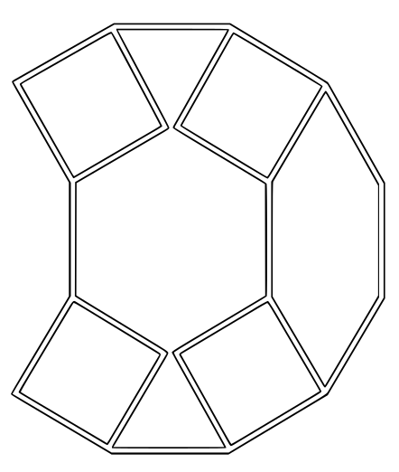
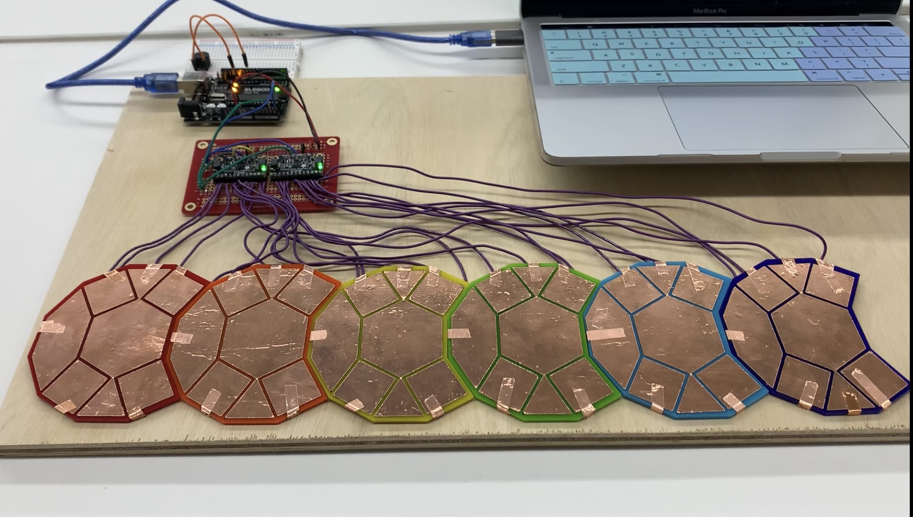

<br>
#### Week 12: Process and Next Steps
##### The Keystone:
<div style="position: relative; width: 100%; height: 0; padding-top: 56.2500%;
padding-bottom: 0; box-shadow: 0 2px 8px 0 rgba(63,69,81,0.16); margin-top: 1.6em; margin-bottom: 0.9em; overflow: hidden;
border-radius: 8px; will-change: transform;">
<iframe loading="lazy" style="position: absolute; width: 100%; height: 100%; top: 0; left: 0; border: none; padding: 0;margin: 0;"
src="https:&#x2F;&#x2F;www.canva.com&#x2F;design&#x2F;DAF2912UmEw&#x2F;view?embed" allowfullscreen="allowfullscreen" allow="fullscreen">
</iframe>
</div>
<a href="https:&#x2F;&#x2F;www.canva.com&#x2F;design&#x2F;DAF2912UmEw&#x2F;view?utm_content=DAF2912UmEw&amp;utm_campaign=designshare&amp;utm_medium=embeds&amp;utm_source=link" target="_blank" rel="noopener">Keystone</a> by Adelaide Maguire Young
###Demonstration:
<iframe width="420" height="315" src="https://youtu.be/iw75oqODK5Q">
</iframe>
##### Materials:
- Arduino Uno
- Adafruit MP121 CapTouch Board x2
- Solderable Breadboard
- Small piezo buzzer
- Adhesive copper film
- Adhesive Vinyl
- Wire
- Non-conductive surface (I used cast acrylic)
##### The Equipment:
- laser cutter
- vinyl cutter
- soldering kit
##### The Frabrication:
The Keystone in its current iteration is assembled as a series of capacitive touch sensors connected to an Arduino Uno using Adafruit CapTouch boards.
The touchpads were developed to tessellate. This means that the pattern can repeat infinitely in any direction and cover a flat surface without any holes. As a result, I was able to repeatedly print the same SVG file as many times as I needed. After quite a few trials and errors, I realized that the copper film was too finnicky to reliably use in the vinyl cutter. To circumvent this, I layered the copper film over adhesive vinyl, and then ran that through the vinyl cutter. That gave the copper enough structure in order to consistently cut this design without wrinkles or snags.
<img src= "vinyl_cut.gif">
Click on the image below to download the .svg file of the tessellated interface pattern.
<br>
<a href="./tess_edges.svg" download>

</a>
Once the copper was cut out, I attached it to laser cut acryclic. For the sake of this iteration, I cut out each acrylic base individually as opposed to one long and rigid backing. I was unsure of how many "modules" I would be able to complete, so I wanted that flexibility. Additionally, this allowed me to color code the modules by the widely accepted solfege color code, which helped me keep track of my work. In order to reduce the number of connections needed between the touch pad and the Arduino, and to allow for the wires to be soldered onto the back of the modules, I wrapped copper tape around the back, as shown in the photo below. The squares are connected as they play the same note. When assembling, the wire was soldered directly to this copper film.
<img src="IMG_5847.png" width="400px">
Simultaneously, I was working on the code. Even for a novice coder like me, it was relatively simple to create a single capacitive touch sensor. The two main challenges were writing code that didn't require the user to ground themselves in order to interact with the sensor, and to structure the code in the most efficient way possible. At first I attempted to use a class structure for all the individual tones, but with a lot of help from Bobby and Kassia, I settled on utilizing a struct containing all the pitches and borrowed some code Adafruit featured on their site on the MPR121 page. Below is a picture of what the circuit looked like before it was soldered. The final code is posted below.
<img src="IMG_5762.png" width= "400px">
I used two Adafruit MPR121s, which can each hold 12 capacitive touch pads, for a total of 24. This was perfect for my first attempt at building the whole thing, as a microtonal scale contains 24 discrete tones. Iterating to further octaves would be a relatively easy next step if I could create the whole first octave. The video below shows what it looked like with the first module soldered to the breadboard. You can also see the edges of the copper film that wrap around to the back of the acrylic. Connecting both boards to a common ground and 5V hookup helped simplify the circuit A LOT. Note how the MPR121 on the left has a small yellow wire connecting the ADDR pin to the 3.3V hookup. This is how the Arduino identifies that there are two different units being used.
The Arduino is also wired to a simple circuit containing a piezo buzzer. My next steps for this project involve replacing the hardware and the code in this iteration with a MIDI hookup and MaxMSP code so that the Keystone can interface directly with a laptop or computer as its speaker and control center.
Once this proved a success, it was a relatively simple, albeit tedious, process to solder all 24 connections across six modules. Below is an image of what it looked like once all the soldering was done.

To iterate the circuit and the code across all the modules, I needed to calculate the frequencies for all of the microtones. It is not too hard to find the diatonic scale frequencies online, but I was a little surprised that I couldn't readily find a simple table of all of the microtones. So, I made my own! There is standard notation that has been created to cover the microtones as both sharps and flats, but these symbols don't exist on a standard keyboard. For the purpose of typing code, the table, and the slideshow with relative ease, I exclusively used sharps and used the following system:
Base Note: N<br>
Note 1/4 Sharp: Nhs, N+<br>
Note Sharp: Ns, N#<br>
Note 3/4 Sharp: Nss, N*<br>
<table>
<tr>
<th>Pitch</th>
<th>Frequency</th>
</tr>
<td>G# 3</td>
<td>415.30</td>
</tr>
<td>Gss 3</td>
<td>427.47</td>
</tr>
<td>A 4</td>
<td>440</td>
</tr>
<td>Ahs 4</td>
<td>452.89</td>
</tr>
<td>A# 4</td>
<td>466.16</td>
</tr>
<td>Ass 4</td>
<td>479.82</td>
</tr>
<td>B 4</td>
<td>493.88</td>
</tr>
<td>Bhs 4</td>
<td>508.36</td>
</tr>
<td>C 4</td>
<td>523.25</td>
</tr>
<td>Chs 4</td>
<td>538.58</td>
</tr>
<td>C# 4</td>
<td>554.37</td>
</tr>
<td>Css 4</td>
<td>570.61</td>
</tr>
<td>D 4</td>
<td>587.33</td>
</tr>
<td>Dhs 4</td>
<td>604.54</td>
</tr>
<td>D# 4</td>
<td>622.25</td>
</tr>
<td>Dss 4</td>
<td>640.49</td>
</tr>
<td>E 4</td>
<td>659.25</td>
</tr>
<td>Ehs 4</td>
<td>678.57</td>
</tr>
<td>F 4</td>
<td>698.46</td>
</tr>
<td>F# 4</td>
<td>718.92</td>
</tr>
<td>Fss 4</td>
<td>739.99</td>
</tr>
<td>G 4</td>
<td>761.67</td>
</tr>
<td>Ghs 4</td>
<td>783.99</td>
</tr>
<td>Gss 4</td>
<td>806.96</td>
</table>
<br>
#####The Code
<p> Below is the primary code for the Keystone interface. The header file for "pitches.h" follows.
<pre><code class="language-arduino">
#include <Wire.h>
#include "Adafruit_MPR121.h"
#include "pitches.h"
// Set up the output pin to be used for the speaker
#define SPEAKER 10
// It is possible to have up to four of these connected.
// But it needs the "addresses" to be set correctly.
Adafruit_MPR121 cap1 = Adafruit_MPR121();
Adafruit_MPR121 cap2 = Adafruit_MPR121();
int numcaps;
void setup() {
Serial.begin(9600);
numcaps = 0;
if (cap1.begin(0x5A)) {
cap1.setThresholds(25,20);
Serial.println("MPR121 #1 found at 0x5A.");
numcaps |= 1;
}
if (cap2.begin(0x5B)) {
cap2.setThresholds(25,20);
Serial.println("MPR121 #2 found at 0x5B.");
numcaps |= 2;
}
if (numcaps == 0) {
Serial.println("ERROR: No MPR121s found.");
while (1);
}
}
void loop() {
// Check each sensor and if touched play the note.
// If no sensors are touched, turn off all notes.
int playing = -1;
// Loop through all possible cap devices
for (int c=0; c<2; c++) {
uint16_t currtouched;
// Get the currently touched pads for all found cap devices
if (numcaps & (1<< c)){
switch (c) {
case 0:
currtouched = cap1.touched(); break;
case 1:
currtouched = cap2.touched(); break;
}
for (uint8_t i=0; i<12; i++) {
if (currtouched & (1<< i)) {
//Serial.print ("1\t");
playing = i+c*12;
} else {
//Serial.print ("0\t");
}
}
Serial.println();
}
}
if (playing != -1) {
tone (SPEAKER, capNotes[playing]);
} else {
// If we didn't find a button pressed, make sure everything is off
noTone(SPEAKER);
}
}
</code></pre>
<p> Below is the header file "pitches.h" which contains the content of the table displayed above in a form suitable for code.
<code><pre class="language-arduino">
float capNotes[24] = {
587.33,
604.54,
622.25,
640.49,
659.25,
678.57,
698.46,
718.92,
739.99,
761.67,
783.99,
806.96, //G#4
415.30, //G*3 (octave jump down, pads start here then loop through)
427.47,
440,//A4
452.89,
466.16,
479.82,
493.88,
508.36,
523.25,
538.58,
554.37,
570.61
};
</code></pre>